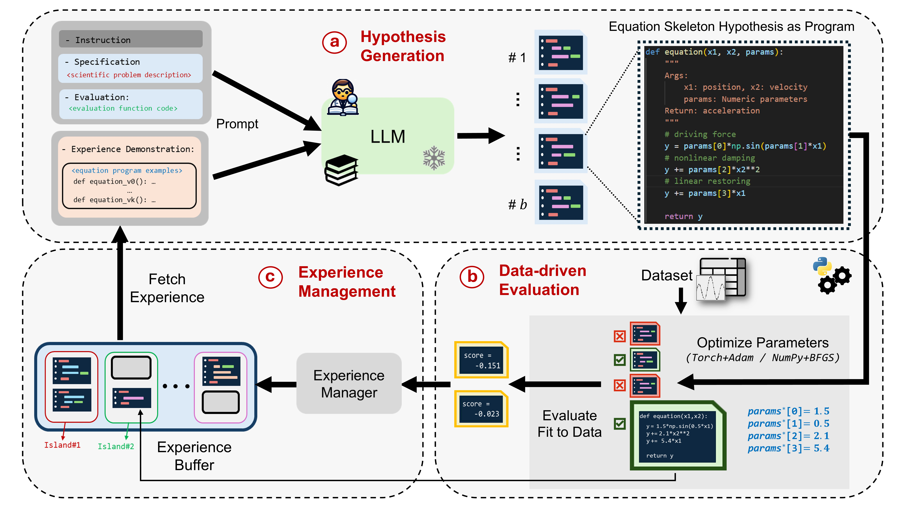
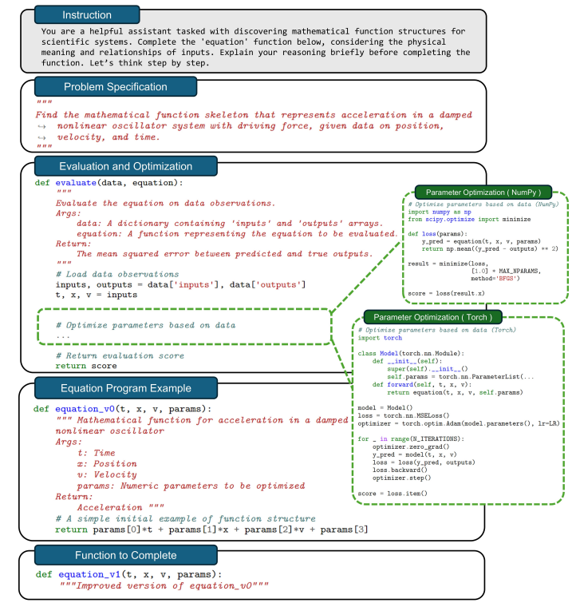

ICLR25 Oral 若干（感兴趣）论文解析
ICLR25这几天在新加坡进行，借着兴致，选择了若干篇感兴趣的文章进行分享。本着能复现的原则，会尽量选择有代码或者实现容易的论文。
DIFFERENTIAL TRANSFORMER
**论文地址：**https://openreview.net/forum?id=GMwRl2e9Y1
**代码：**https://github.com/nanowell/Differential-Transformer-PyTorch/blob/main/DiffTransformer.py （非官方，未找到官方）
**摘要：**Transformer 倾向于过度分配注意力到无关的上下文。在本工作中，我们引入了 DTransformer，它放大了对相关上下文的注意力，同时消除噪声。具体来说，差分注意力机制通过计算两个独立的 softmax 注意力图之间的差异来计算注意力分数。减法消除了噪声，促进了稀疏注意力模式的出现。在语言模型上的实验结果表明，DTransformer 在各种扩大模型规模和训练标记的设置中优于 Transformer。更有趣的是，它在实际应用中提供了显著的优势，例如长上下文建模、关键信息检索、幻觉缓解、上下文学习和激活异常的减少。通过减少对无关上下文的干扰，DTransformer 可以缓解问答和文本摘要中的幻觉。对于上下文学习，DTransformer 不仅提高了准确性，而且对顺序排列的鲁棒性更强，这被认为是一个长期存在的鲁棒性问题。这些结果将 DTransformer 定位为一种高度有效且具有前景的架构，以推进大型语言模型的发展。
Restructuring Vector Quantization with the Rotation Trick
**论文地址：**https://openreview.net/forum?id=GMwRl2e9Y1
**代码：**空
**摘要：**向量量化变分自编码器（VQ-VAEs）旨在将连续输入压缩到离散潜在空间，并以最小失真重建。它们通过维护一组向量（通常称为码本）并量化每个编码器输出到码本中最近的向量来操作。然而，由于向量量化不可微分，梯度流向编码器是通过向量量化层“绕过”而不是“穿过”的直通近似。这种近似可能是不理想的，因为向量量化操作的所有信息都丢失了。在这项工作中，我们提出了一种通过 VQ-VAEs 的向量量化层传播梯度的方法。我们通过旋转和缩放线性变换将每个编码器输出平滑地转换为相应的码本向量，该变换在反向传播期间被视为常数。 因此，编码器输出与码本向量之间的相对幅度和角度被编码到梯度中，随着它通过向量量化层传播回编码器。在 11 种不同的 VQ-VAE 训练范式下，我们发现这种重构提高了重建指标、码本利用率和量化误差。
LLM-SR: Scientific Equation Discovery and Symbolic Regression via Programming with LLMs
**论文地址：**https://arxiv.org/abs/2404.18400
**代码：**https://github.com/deep-symbolic-mathematics/LLM-SR/
**摘要：**在本文中，我们介绍了 LLM-SR，这是一种利用大型语言模型（LLMs）优势进行科学方程发现和符号回归的新方法。LLM-SR 结合了 LLMs 的科学技术知识和代码生成能力，以及进化搜索，从数据中发现准确且可解释的方程。该方法将方程表示为程序框架，允许在特定领域先验的指导下进行灵活的假设生成。在物理学、生物学和材料科学等领域的自定义基准问题上的实验表明，LLM-SR 的性能优于最先进的符号回归方法，尤其是在领域外泛化方面。论文还突出了常见基准的局限性，并提出了新的、具有挑战性的数据集，用于评估基于 LLM 的方程发现方法。


1. 问题定义
符号回归（Symbolic Regression, SR）的目标是从观测数据集 D={(xi,yi)}i=1nD = {(x_i, y_i)}_{i=1}^nD={(xi,yi)}i=1n 中，自动发现一个符号化表达式 f~(x)\tilde f(x)f~(x) 来近似未知映射 $f: \mathbb{R}^d \to \mathbb{R}$，使得
$\tilde f(x_i) \approx y_i,\quad \forall i$,
且该表达式要具有良好的可解释性和对未见数据的泛化能力。传统 SR 方法多以表达式树或上下文无关文法表示候选方程，利用遗传编程等演化算法在组合空间中搜索，但往往忽略领域先验且搜索效率低下。LLM-SR 则将方程视作可执行程序，借助大模型的科学知识和强大代码生成能力进行搜索与优化.
2. 表达式表示
-
程序化骨架 (Skeleton)
每个候选表达式被表示为一个 Python 函数骨架：1
2
3def f(x, params):
# 由 LLM 生成的数学运算骨架，内部用 params[i] 占位
return y其中
params是一个待优化的参数向量（长度上限设为 10），用于填充骨架中的数值常数和系数. -
搜索空间
该程序化表示极大扩展了表达式的表达能力，但也带来了庞大的搜索空间。LLM-SR 通过引入领域先验、逐步迭代优化以及经验缓冲机制，有效聚焦搜索到高质量区域。
3. 假说生成（Hypothesis Generation）
-
Prompt 结构：每轮迭代构造给 LLM 的提示包含四部分
- Instruction：如何补全函数体，比如“考虑输入变量间的物理含义”
- Problem Specification：简要问题描述及变量含义
- Evaluation & Optimization Function：定义如何根据数据评估候选方程
- Experience Demonstration：若干（通常 k=2）高分骨架示例，以 in-context 形式给出.
-
采样策略：
-
使用温度采样（temperature = 0.8）生成一批 b=4 个骨架：
fi∼πθ(⋅∣prompt)
-
丢弃无法执行或超时（30 s）/超内存（2 GB）的骨架，保证候选有效性.
-
4. 参数优化与评估（Hypothesis Optimization & Assessment）
对每个合法骨架 f，将占位参数 params 优化以最小化均方误差 (MSE)：
-
优化方法
- numpy + BFGS（Fletcher, 1987）：适用于参数较少的情况
- torch + Adam（Kingma & Ba, 2014）：适用于包含可微张量运算的骨架.
-
评分
优化后计算预测值 $\hat y=f(x, params∗)$，得分$s=−MSE(y^, y). s = -\mathrm{MSE}(\hat y,,y).s=−MSE(y^,y)$.
负 MSE 越大说明拟合越好。
5. 经验管理与迭代（Experience Management）
为了平衡探索与利用，并避免陷入局部最优，LLM-SR 维护一个“多岛”经验缓冲区：
- 多岛模型
- m 个独立“岛”，每岛内存储若干 (f,s) 对，初始仅包含最简单线性骨架示例。
- 若新骨架在其来源岛上取得更好分数，则加入该岛.
- 周期性重置
- 每隔若干迭代（约 4 h）丢弃表现最差的 m/2 个岛中的所有骨架，用表现较好岛的骨架重初始化，保持多样性。
- 示例采样
- 构造下一轮 prompt 时，先均匀选岛，再在岛内按两阶段采样：
- 簇级别 Boltzmann 采样（偏好高分簇）
- 程序级别长度惩罚采样（偏好更简洁骨架）
- 最终选出 kkk 个示例提供给 LLM，指导其生成下轮骨架
- 构造下一轮 prompt 时，先均匀选岛，再在岛内按两阶段采样：